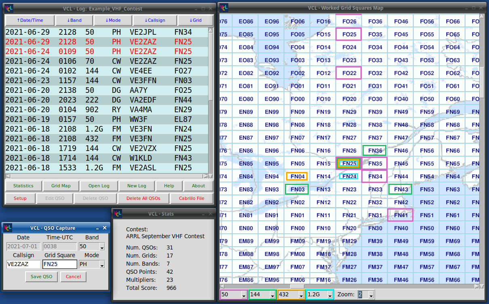
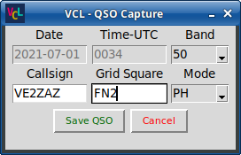
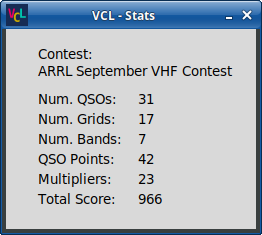

ARRL VHF Contest Logger
Version 1.0, July 2021
By Bert, VE2ZAZ (http://ve2zaz.net)
Overview
This amateur radio
software provides the ability to log and display the QSOs (radio
contacts) made during one of the ARRL VHF contests. It offers a
simple but efficient interface customized for these contests. The
interface is distributed over several independent windows,
which allows the user to better organize the desktop. The
software performs continuous "dupe checks" and score
calculation. It also displays the worked grid squares using
color boxes on a zoom-able Maidenhead grid world map. To save the contest
information, the script uses a simple CSV (comma-separated text)
file; no complex database is used. Since this software is a
python script, it can be run on Linux, Windows and Mac, once the
python-3 interpreter is installed. Another benefit of being a
Python script is that it uses a
simple text file as source code. It can thus be easily
improved and customized by the user. Though it is customized for VHF
contesting, this software can also be used
for general logging of VHF/UHF/Microwave contacts.

|
The
ARRL VHF Contest Logger software windows
|
Detailed Description
QSO Capture Window
The QSO Capture window
is the main input channel for adding new QSOs or for editing
existing QSOs in the logbook. The QSO Capture window has the
following features and behavior.

|
| The
QSO Capture window |
- A new QSO is added
to the logbook by executing the following sequence:
- Fill in the
amateur radio callsign of the worked station in the Callsign
entry box,
- Fill in the
2-Letter/2-number Maidenhead grid square in the Grid Square
entry box,
- From the "Band"
pull-down list select the amateur radio band used for
working the station,
- From the "Mode"
pull-down list select the modulation mode used.
- Click on the "Save
QSO" button.
- The program
automatically fills in the current date and time when the
"Date" and "Time-UTC" entry fields are grayed out, which is
the default program behavior. The user can also perform
manually date/time entry when needed by clicking on one of
these two fields. A white background in the fields indicate a
manual date/time entry mode.
- Once the proper band
and mode are selected, the interface allows to repeatedly
capture QSOs using only the keyboard, without reaching for the
mouse, for as long as the QSOs occur on the same band and with
the same mode. The <Tab> key provides a quick jump of
the cursor from the Callsign field to the Grid Square field.
Pressing the <Return> key when the cursor is located in
either of these fields will save the QSO to the logbook.
- The "Cancel" button
clears any data from the Callsign entry and the Grid Square
entry fields. It also puts the Date/Time fields back into
automatic update. When in QSO Edit mode, it cancels the Edit
QSO mode and returns the window back into new QSO Capture
mode. The Cancel button has no effect on the Logbook content.
- The program performs
"Dupe" (contact duplication) checks on-the-fly as the operator
is typing in the data (a dupe is a contact with the same
callsign/grid/band). In the presence of a dupe, the QSO
Capture window background switches to an orange color and the
already existing QSO is highlighted in orange color in the QSO
list.
- The program performs
an on-the-fly check of the callsign and grid square formats.
Any character not allowed in the formats is deleted by the
program as soon as it is entered by the user. The allowed
callsign format is a maximum of eight letters,digits and the
slash ('/') character. The allowed grid square format is two
letters followed by two digits.
- The program converts
all characters typed in to UPPERCASE.
- The logbook file
gets updated as soon as a new QSO is captured, and after a QSO
is edited or erased.
QSO List Window
The "QSO List" window is
the main program window. It shows a list of all radio contacts
that were entered in the logbook. It also offers a series of
buttons above and below the QSO list to manage the program
features. The "QSO List" window has the following features and
behavior.
- The QSO List window
banner displays the name of the loaded logbook file (file
extension removed).
- A new QSO will
always show up at the top of the list, regardless of the
sorting criterion previously invoked. This provides an easy
way of locating the new QSO in the list.
- Any QSO can be
edited at a later time by executing the following sequence:
- Select the QSO to
be edited from the QSO list content by clicking on the
corresponding line.
- Click on the "Edit
QSO" button. This sends the QSO data back to the QSO Capture
window for editing.
- Make the desired
changes to the QSO data in the QSO Capture window.
- Click on the
"Update QSO" button to save the modifications, or click on
the "Cancel" button to cancel the changes and return the QSO
Capture window to the New QSO Capture mode.
- The QSO List window
will show any duplicate QSOs logged in the list with a red
font. This provides an easy way to spot duplicates in the QSOs
already captured in the logbook.
- The on-the-fly dupe
checker will highlight any potential duplicate QSO in the list
with an orange color, as the user types in the new QSO data in
the QSO Capture window, and even before the new QSO is saved.
- The QSO list can be
sorted by date/time (latest first), callsign, grid square,
radio mode and radio band using the 5 buttons places just
above the QSO list.
- Clicking on a QSO in
the QSO list recalls the QSO information back into the QSO
Capture window. This allows to quickly save consecutive QSOs
with the same station, but on a different grid or band. The
Cancel button will clear that QSO data.
- The QSO list font
size can be changed in the Setup Window. See a description of
that feature in the Setup window section below.
Additionally, various
buttons are available at the bottom of the QSO List window.
- The "Statistics"
button brings up the logbook statistics window.
- The "Grid Map"
button brings up the worked Maidenhead grid square map.
- The "Open Log"
button opens an existing contest logbook file (.VHFlog
extension).
- The "New Log" button
clears the logbook list and allows to create a new logbook
file. This does not erase any previously-opened logbook file
contents.
- The "Help" button
brings up the Help window to display additional information on
each function or button.
- The "About" button
brings up the splash screen with program and author
information. You can click on the splash screen to get rid of
it.
- The "Setup" button
brings up the Setup window to configure various program
settings such as the user's callsign and grid square, the
contest and the font size for the QSO List.
- The "Edit QSO"
button sends the selected QSO to the QSO Capture window for
entry correction.
- The "Delete QSO"
erases the selected QSO from the QSO list. A confirmation of
this action is requested via a popup window.
- The "Delete All
QSOs" erases all the QSOs from the QSO list. A confirmation of
this action is requested via a popup window.
- The "Cabrillo File"
button produces a Cabrillo-formatted logbook file for
submission to the ARRL.
More information on the
action produced by these buttons is available below.
Grid Map Window
The "Grid Map" window
displays the worked Maidenhead grid squares for up to four radio
bands using color boxes on a scroll-able world map. The Grid Map
window has the following features and behavior.
- The world map is
available in in x1, x1.5 and x2 zoom levels. The zoom level
can be selected via a pull-down list at the bottom of the Grid
Map window.
- Depending on the
zoom level, up to four colors are available to display the
grid squares worked during the contest. For each color, a pull
down list is provided to select which amateur radio band to
display. A worked grid square will show up as a colored
rectangle contained within the grid square.
- Due to grid size
constraints, the number of bands that can be displayed is
limited to two for the x1 zoom level and to three for the x1.5
zoom level. The x2 zoom level allows for four bands to be
displayed.
- Moving the map
around is as easy as clicking on the map surface and dragging
the map within the window. Alternatively, the map can be moved
using the vertical and horizontal scroll bars. Note that the
Grid Map window can be resized to the
user's preference.
- When the software is
launched, the world map is loaded into memory even if the Grid Map window is not shown.
Depending on how powerful the user's computer is, and
depending on which zoom level is selected, it may take more or
less time to load the map. During that time, the program's
"splash screen" is shown. That loading delay will re-occur
whenever the zoom level is changed.
- The world map
projection is "equirectangular", which produces grid squares
of identical on-screen size regardless of the latitude. This
has the drawback of increasingly distorting the map features
as the latitude is increased.
Statistics Window
- The "Statistics"
window displays the contest numbers in real time, as new QSOs
are added to the list. The software applies the ARRL rules for calculating the score, and
takes into account the time-of-year of the contest (the
January contest rules award a higher score to UHF and
microwave QSOs).

|
The
Statistics window
|
The Statistics window displays the following
metrics:
- The number of
completed QSOs,
- The number of worked
grid squares,
- The number of worked
radio bands,
- The QSO points,
- The multipliers,
- The total score.
This is the metric that counts in the end!
Note: In order for
the software to calculate an accurate contest score, the right
contest (January, June or September) must be selected in the Setup
window.
Setup Window
The "Setup" window allows the user to provide
the following information and make settings adjustments:
- A pull-down list is
provided to select the current ARRL contest, allowing the
software software to produce an accurate score calculation.
- The user's callsign
and grid square can be filled in in two separate entry boxes.
These are used to produce the Cabrillo format file.
- A slider is provided
to adjust the QSO list font size to the user's preference.
Note that while the Setup
window is shown, all other windows are disabled. The user must
close the Setup window to return to normal software operation.
Other Features
- The software saves
the logbook as a simple CSV
(comma-separated text) ASCII text file .The logbook
file can be manually consulted and edited using an ASCII text
editor if ever needed. However, the original formatting must
be maintained for the software to properly run.
- Before any change is
made to the QSO list (and to the logbook file), the software
makes a backup copy of the logbook file (the file has a
.VHFlog.bak file extension). This becomes the operator's
"undo" solution in case of a major error from his part, or a
computer system fault. Note that the backup file is
overwritten whenever a QSO is added, erased or edited.
- The program
generates a Cabrillo format contest results submission file.
Within that file, the user merely fills in the header part
using any ASCII test editor. Then the file can be
electronically submitted to the ARRL. Note that the user's
callsign and grid square are required to be filled in in the
Setup window prior to generating the Cabrillo file.
- When exiting the
software, the most common program settings are saved in a
configuration file named, config.sav). They are retrieved at
the next program launch. In other words, quitting and then
re-launching the program will bring back the same
configuration (loaded contest file, QSO list, windows
positions and sizes, operator's callsign and grid square,
etc.). If for any reason the configuration file gets
corrupted, it may cause software errors and misbehavior. When
this happens, it is recommended to simply delete the
config.sav file, launch the software again and reconfigure it
as if it was the first time that the software is run. This
obviously will have no effect on the logbook files' integrity.
Prerequisites
and Installation
This software is
non-invasive:
- Everything happens
in the local directory and sub-directories where the python
script is located.
- No Windows registry
writes are deliberately performed by the software. No Windows
environment variables are modified or added.
The ARRL VHF Contest
Logger software is contained in a single folder that can be
downloaded from GitHub. Simply decompress the downloaded .zip file
to a suitable disk location of your choice.
Since the software is a Python 3 script, the Python 3 interpreter
must be already installed on the computer in order to to run this
software. The Python 3 installation procedure differs depending on
which operating system the program is executed in.
Python
3 Installation
Windows Systems
If your computer has Windows 10 running, and is up-to-date, the
easiest way to install Python 3 (including IDLE) is through the
Microsoft store. Select the latest available stable release of
Python 3 (3.9 at the time of writing this).
For other Windows versions, or if your Windows 10 system is not
up-to-date, the Python 3 interpreter can be installed by downloading
the proper Windows installer (select either 32-bit or 64-bit version
based on your current Windows installation) from https://www.python.org/downloads/windows/,
and by running the downloaded installation executable file.
Everything that is needed to run the VHF Contest Logger software is included with
this Python 3 installation. No other 3rd party libraries are
required when installing on Windows.
Linux
Systems
Python 3
The most recent major Linux distributions include Python 3.
To verify its presence, type the following command at the command
prompt:
$ ls
/usr/bin/python*
The terminal should
display the installed Python version executables:
/usr/bin/python
/usr/bin/python3
/usr/bin/python3-config
/usr/bin/python2
/usr/bin/python3.8
/usr/bin/python2.7
/usr/bin/python3.8-config
In this example, the
systems has both python 2.7 and python 3.8 already installed.
If your Linux distribution does not offer Python 3
pre-installed, you can install it like any major software:
- Using the built-in Linux
software installer, Synaptic, or such built-in tool, the
Python 3 installation should be easy.
- Alternatively, you can
issue the standard installation command that your system
supports, examples being:
~$ sudo
apt-get install python3 for Debian-based
distributions (Debian/Ubuntu/Linux Mint, etc.).
~$ sudo dnf
install python3 for
Fedora distributions.
~$ sudo
yum install python3 for Redhat/RHEL/CentOS
distributions.
Tkinter library
The Linux installation of Python 3 will likely not
include the TKinter library, which produces the windows and
buttons created by the VHF
Contest Logger software. If that is the case, you will get
the "ImportError: No module named 'tkinter'" error message when
trying to run the program. To install Tkinter for Python 3, issue
the following command:
~$ sudo apt-get install python3-tk for
Debian-based distributions (Debian/Ubuntu/Linux Mint, etc.).
~$ sudo dnf
install python3-tk for Fedora
distributions.
~$ sudo
yum install python3-tk for
Redhat/RHEL/CentOS distributions.
MacOS
Although it has not been
tested, the software should also run properly on the MacOS once
the installation of Python 3 is performed. Like with a Windows
installation, the TKinter library is included. Follow the Python 3
installation instructions given here: https://www.python.org/download/mac/tcltk/
Running the VHF Contest Logger software
The best way to launch the software is to invoke it from the
command prompt. There are alternatives for launching the software,
such as double-clicking on the python script or running it within
the Python IDLE environment, but the results are not guaranteed.
Windows Systems
Open a Command Prompt window and "cd" (change directory) to the
directory where the VHF Contest Logger software is located (where
you have unzipped the GitHub file). For example:
C:\Users\me> cd \software\QSO_Logger
Then launch the program by typing the following command at the
prompt:
C:\software\QSO_Logger> python3
VHF_Contest_QSO_Logger.py
Note
that on some Windows installations, the command to launch
the program may be different, "py" instead of "python3":
C:\software\QSO_Logger> py VHF_Contest_QSO_Logger.py
The
software was tested in Windows 7 32-bit and Windows
10 64-bit environments.
Linux
Systems
Open a Command Prompt window and "cd" (change directory) to the
directory where the VHF Contest Logger software is located (where
you have unzipped the GitHub file). For example:
~$ cd software/QSO_Logger
Then launch the program by typing the following command at the
prompt:
~/software/QSO_Logger$
python3 VHF_Contest_QSO_Logger.py
Note
that on some Windows installations, the command to launch
the program may be different, "py" instead of "python3":
~/software/QSO_Logger$
py
VHF_Contest_QSO_Logger.py
The software was tested
in Xubuntu 20.04 64-bit and in Lubuntu 18.04 64-bit
environments.
Legal
Notice
This software, along with
all accompanying files and scripts, is free software: you can
redistribute it and/or modify it under the terms of the GNU
General Public License as published by the Free Software
Foundation, either version 3 of the License, or any later
version. This program is distributed in the hope that it will be
useful, but WITHOUT ANY WARRANTY; without even the implied
warranty of MERCHANTABILITY or FITNESS FOR A PARTICULAR
PURPOSE. See the GNU General Public License for more
details. You should have received a copy of the GNU General
Public License along with this program. If not, see
<https://www.gnu.org/licenses/>. When modifying the
software, a mention of the original author, namely Bert-VE2ZAZ,
would be a gracious consideration.
Note
This text is extracted from
the "Help.html" file (and the "Images" directory) provided with
this software.
{kind=link}
{kind=link}
{kind=link}
{kind=link}
{kind=link}
{kind=link}